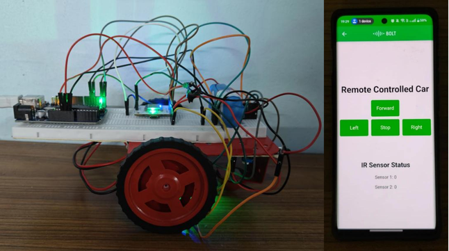

Aryaman Kaprekar
AI Research Engineer
My driving interest is research and development at the frontier of AI — understanding why models work, where they break, and how to push the boundary. That curiosity has taken me through published literature, end-to-end projects, and bridging the gap between a paper and its real-world implementation.

Deep learning, applied.
Deep learning is the core of what I do — with a bias toward the parts of the field where models meet real constraints. Quantization, edge deployment, lightweight architectures, and the engineering between a research paper and something you can actually run.
Some More
My work spans three areas. Autonomous vehicles is the domain I'm most drawn to and where most of my industry experience sits. Medical computer vision is where I've done my published research. Edge deployment — quantization, custom operators, C++ inference — is the thread that runs through both.
Most recently I was an ADAS Engineer at DeepGrid Semi (promoted from AI Intern), leading model deployment across three autonomous driving programs. I ported end-to-end models like AD (Autonomous driving) model from research code to ONNX → TensorRT FP16 → C++, validated precision from FP32 down to INT8, and built custom CUDA operators and TensorRT plugins.
Alongside that, I was a Research Fellow at MAHE's Advanced Healthcare Lab with three publications in Nature Scientific Reports and Elsevier's Informatics in Medicine Unlocked — on lightweight networks, uncertainty quantification, and explainable AI for medical imaging.
B.Tech Hons. Cyber Physical Systems, Manipal Institute of Technology, with a minor specialization in Computational Intelligence. CGPA 8.69.
Where I've worked.
AI Intern → ADAS Engineer
DeepGrid Semi Pvt Ltd · T-Hub, Hyderabad
- Led the AI team — overseeing research direction, task allocation, and technical decisions across three autonomous driving programs (AD0, AD1, AD2).
- Drove AI research end-to-end, from paper reproduction to edge deployment on hardware accelerators.
- Deployed end to end SOTA autonomous driving models across the full stack: PyTorch-only port, ONNX, TensorRT, C++ inference, and live real-world sensor integration (LiDAR, RGB, IR, GPS, IMU).
- Built custom CUDA operators, TensorRT plugins and ran model optimisation experiments like quantisation, knowledge distillation and pruning.
- Ran open-loop evaluations on Cityscapes, NuScenes, NuPlan, IDD, and Waymo; and closed-loop simulations on Carla and Navsim.
- Represented DeepGrid at the AI Impact Summit, interviews, and to visiting delegations and investors.
 End 2 End Deep Learning AD Model
End 2 End Deep Learning AD Model
 Traditional 4 Pillar Stack
Traditional 4 Pillar Stack
 CARLA Simulator Testing
CARLA Simulator Testing
 AD0 with L2+ Model
AD0 with L2+ Model
Research Fellow
Advanced Healthcare Lab, MAHE · Manipal, IN
- Co-author on peer-reviewed work in cardiac ultrasound and CT imaging — systematic review of LVH detection, and TrustNet (uncertainty-quantified ischemic stroke detection).
- Lead author on a multi-level attention CNN-Transformer framework for brain tumor diagnosis with regional dual-score explainability.
- Focus areas: lightweight architectures, uncertainty quantification, quantitative explainable AI.
 Dual Score Regional XAI
Dual Score Regional XAI
 TrustNet XAI Uncertainty Quantifications
TrustNet XAI Uncertainty Quantifications
 CAD Approaches for Ultrasound
CAD Approaches for Ultrasound
Peer-reviewed Literature.
Regional Dual-Score Explainability: A Multi-Level Attention CNN-Transformer Framework for Brain-Tumor Diagnosis Author
TrustNet: A Lightweight Network with Integrated Uncertainty Quantification and Quantitative Explainable AI for Ischemic Stroke Detection in CT Images Co-author
Automated Identification of Left Ventricular Hypertrophy using Cardiac Ultrasound Imaging: A Systematic Review of AI-Driven Approaches Co-author
Skills & Tools.
Languages
- Python
- C++
- C
- Embedded C
Frameworks
- PyTorch
- ONNX
- TensorRT
- Git
- Linux
- CUDA
- MATLAB
- OpenCV
- MLFlow
- DVC
- Docker
- CMake
- Numpy
- Pandas
Niche stack
- Custom CUDA Ops
- TensorRT Plugins
- CARLA
- Navsim
- Bench2Drive
- RK NPU toolkit
- Voyager SDK
- OpenMMLab
- Precisions (fp32, fp16, bf16, fp8 (E4M3 / E5M2), int8, nvfp4, ternary)
Certifications
- NPTEL — Deep Learning for Visual Computing (Top 5%)
- NPTEL — Digital Image Processing (Top 5%)
- NPTEL — Intro to Internet of Things (Top 5%)
- NPTEL — Research Methodology (Top 5%)
- NPTEL — Intro to LLMs
- Coursera — Deep Learning Specialization
- Coursera — GAN Networks
- Coursera — Smart Cities
Things I've tinkered with.
RL-based Batch Reactor Controller
Reinforcement learning agent for temperature regulation in a batch chemical reactor. Used Policy Mirror Descent algorithm with Temporal Difference learning for coolant flow and heater current regulation.

Generative Models for Reflection Removal
Evaluated Autoencoder and GAN-based pipelines for single-image reflection removal. Achieved 89.77% mAP. Finalist at the Qualcomm Vision X Competition at IIT Bombay.

Multimodal AI: Consumer Product Cost Prediction
End-to-end price prediction on Amazon grocery products. Fused Resnet50 visual embeddings with Distil-BERT text embeddings via an MLP fusion layer into an XGBoost regressor; SMAPE of 47.5 on the evaluation set.

End-to-end MLOps Pipeline
Production-grade ML pipeline covering experiment tracking with MLFlow, data versioning with DVC, Docker containerisation, and Git-based CI/CD. Fully reproducible from raw data to deployed model.

SmartRover — Cloud-Controlled Obstacle Detection Vehicle
Cloud-controlled rover with real-time obstacle detection via IR sensors. Built on Arduino Uno + BoltIoT Wi-Fi module with a motor driver circuit.

Smart Soil Monitoring System (S-SMS)
Small-scale system to emulate farm fields and agricultural practices in a controlled space. Monitors NPK (nitrogen, phosphorus, potassium), moisture, and light intensity. Rainwater harvesting incorporated for water supply. Deployed across five soil types on the MIT campus (sandy, garden, grass, swampy, silica) and cross-referenced against ICAR soil classifications to recommend suitable crops.

Life beyond the terminal.
Qualcomm Vision X Finalist
Finalists for the GAN-based reflection removal project at the Qualcomm Vision X Competition, IIT Bombay.
Bolt-IoT & IIT-B
Completed IoT and ML training at Bolt-IoT, and Gesture Robotics at IIT Bombay.
NCC Cadet
Regimental training and social service with the National Cadet Corps.
Everest Base Camp
Completed the EBC trek at 5,364 m, along with several other Himalayan treks.
CR · Team Lead · AI Lead
Class Representative for my batch. Team lead across multiple college group projects. AI Team Lead at DeepGrid Semi.
Guitar, Sketching, Football, Adventure, Travel
Guitar and sketching for the quiet hours. Football, adventure, and travel whenever there's a reason to move.